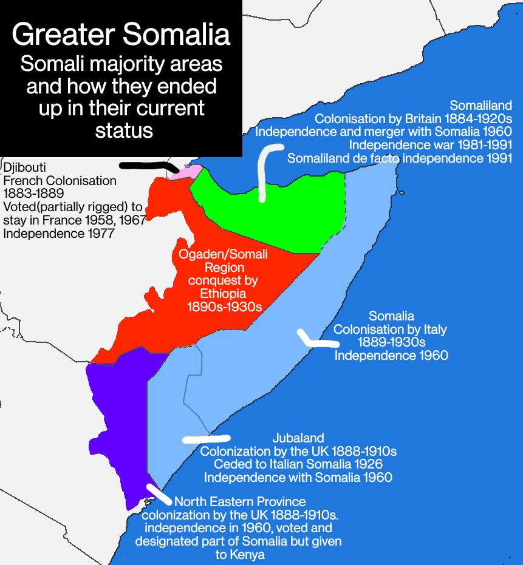

49 Somaliland
Opalo
By population (120m), Ethiopia is the world’s largest landlocked country. Given the economic costs associated with being landlocked, it is hard to imagine the country having a vibrant economy without an efficient transportation and logistics network with links to world markets. At the same time, the geopolitical realities of Ethiopia’s neighborhood in the Horn and wider Red Sea region necessitate having the naval capacity to defend its commercial and security interests.
In my analysis, I concluded that Ethiopia’s best option would be to expand its current arrangement with Djibouti, perhaps with a second new port in Tadjoura. I had not anticipated the bombshell New Year’s announcement of a deal (port and naval base) between Ethiopia and Somalia’s breakaway region of Somaliland.
The details of the deal remain elusive, but the broad strokes include Somaliland acquiring a stake in Africa’s most successful airline, Ethiopian Airlines, while Ethiopia gets access to the port of Berbera as well as land (20km of coastline) for a naval base on the Gulf of Aden. It is also very likely that Ethiopia will eventually recognize Somaliland as a sovereign state.
Somaliland broke away from Somalia in 1991 following 31 years of a tumultuous union.
Beyond the potential for formal recognition by Ethiopia, Somaliland needs the port deal for economic reasons. 48% of the government budget is funded through trade taxes and port duties. With a GDP of just over US$3.3b and against a population of 3.5m, Hargeisa stands to gain from charging Ethiopia for both port access and the leased land for a naval base. There will undoubtedly be domestic political opposition to the deal — the Somaliland defense minister has reportedly already resigned in protest. The region is slated to hold elections this November, after a two-year postponement due to financial and logistical constraints. It remains to be seen whether it was a wise move by President Muse Bihi Abdi’s administration to enter such a deal in an election year.
Ethiopia’s potential recognition of Somaliland comes with a lot of historical baggage. After failing in its irredentist support for separatists in Kenya, Somalia invaded Ethiopia in 1977 (Ogaden War) to begin the process of reuniting all the Somali lands — [a disastrous move that ignited systemic political instability from which Somalia has never recovered}(https://kenopalo.substack.com/p/is-somalia-turning-the-corner). Should Somaliland successfully gain juridical statehood, Mogadishu would be worried that Jubaland (likely with support from Kenya) would be next in asking for greater autonomy (although I doubt that they would want outright formal independence). Because of the deal’s historical symbolism, Mogadishu is likely to pursue a maximalist rejection of the deal regardless of potential compromises (e.g., future federation). In addition, the levels of Somali nationalism ignited by the deal could play in the hands of extremist groups like Al-Shabaab out to cast the government as a weak sellout. President Hassan Sheikh Mohamud and his administration certainly do not want to be remembered as the people who lost yet another piece of “Greater Somalia.”
Given its strategic location, Somaliland is geopolitically valuable to several countries that could quickly follow suit and recognize Hargeisa. Like Ethiopia, Kenya would likely not mind helping along a dismemberment of Somalia (see also here). The United Arab Emirates (UAE), whose DP World already runs the Berbera port, is also likely to strengthen bilateral ties with a formal recognition. While other countries may not recognize Hargeisa outright, formal recognition by Ethiopia, Kenya, and the UAE may create an opening to start treating Somaliland as a state — by, for example, accepting its passport and upgrading other formal engagements.
Egypt, Ethiopia’s most potent rival in the region, signaled support for Somalia’s territorial integrity. Eritrea and Djibouti also expressed nervousness over the deal (Djibouti stands to lose a share of the US$1.5b it charges Ethiopia every year to use its port).
In the context of the geopolitics of the Red Sea, the deal is yet another major win for the UAE — which, incidentally, also has quite a bit of influence in Mogadishu.
Somalia has little diplomatic heft within the African Union, IGAD, or the EAC. Even worse, it lacks the military capacity to compel either Hargeisa or Addis Ababa to negotiate directly.
Addis Ababa has thousands of troops in Somalia countering Al-Shabaab and other security threats — both independently and as part of the African Union Transitional Mission in Somalia (ATMIS). There is no question that a hasty withdrawal of Ethiopian troops would lead to a deterioration of the security situation at a critical juncture in Somalia’s war on Al-Shabaab.
Somalia’s military remains weak and dependent on external support. That said, there is scope for Mogadishu to inflict pain on both Addis Ababa and Hargeisa by supporting armed actors in their respective territories. Ethiopia has a long history of proxy wars via internationalized domestic conflicts. While Somaliland has been stable and largely avoided protracted conflicts since declaring independence in 1991, over the last year it has faced a rebellion in its east organized around efforts to rejoin Somalia — exactly the sort of opportunity that Mogadishu could exploit to its advantage.

After losing the Ogaden War, President Siyad Barre became more authoritarian and resorted to instrumentally exploit the country’s clan structure in a cynical divide-and-rule play.
Siyad dropped his socialist facade and adopted clanism (tribalism) as a manipulative tool to continue to hold on to power after a Soviet led Cuban Ethiopian offensive pushed his army from the Ogaden. By 1982, he had built the army into a force 120,000 strong for internal repression. In rural areas he encouraged clan based conflicts and in urban areas clan based massacres by his notorious specialised military units. He singled out the Isaq clan-family in Somaliland for neo-fascist type of punishment […]
Semi-colonial subjugation helped rekindle collective self-assertion which the northern clan-based opposition movement, the Somali National Movement (SNM) channelled into the declaration of the Somaliland Republic soon after the Siyad dictatorship fell early in 1991.
What Somaliland was able to achieve after 1991 was impressive. Despite the occasional outbreak of conflict, peace returned to much of the territory. The region was also able to avoid the fractious clan-based warlordism that continued to plague southern Somalia, and actually began to cultivate a system of democratic government.
How did they do it? The answer lies in the socio-economic differences between northern and southern Somalia that shaped their respective political economies.
The north was largely pastoralist, while the south relied on farming. Northerners were relatively more nomadic than southerners. Northern elites heavily relied on animal exports across the Gulf of Aden. Reliance on farming made southerners’ farm output easily taxable through government-run marketing boards. There was no equivalent for northern animal exports (a policy change to grab northerners’ forex earnings helped fuel the rebellion in 1981). The availability of arable land meant there was a lot more to fight over in the south after 1991, compared to the poorer and largely nomadic north. Finally, relative poverty in the north meant that both the Somali National Movement insurgency in the 1980s and subsequent self-declared independent government after 1991 had to rely on remittances from abroad. This, in addition to discrimination against northern elites (especially those from the Isaaq clan) by the southern government after 1960, helped coordinate and discipline intra-elite cooperation. Of course clan politics (especially Isaaq dominance) also mattered. But the economic variables above appear to have been decisive in shaping clan politics.
Conclusion
If the deal with Ethiopia gets fully implemented, Somaliland will likely join the ranks of de facto states that nonetheless remain in legal limbo as far as international law goes. There is very little chance that Mogadishu would ever agree to its secession and therefore open the door for other countries to recognize it. However, as long as Hargeisa is able to maintain its stable economic and political system, there is every reason to believe that it will be able to chart its own future separate from the rest of Somalia just like it has since 1991.